Carolyn Yu
👩🏻💻 Role
I worked as a
🛠 Method & Tools
- Method: UI Inventory, Competitive Analysis, WCAG, User Testing.
- Tools: Figma, Zeroheight
💪🏻 Collaborators
Amanda, Abbey, and Kirtika
🗓 Project Duration
Jan 20, 2023 – May 5, 2023
Overview
The Brooklyn Museum is one of
the oldest and largest art museums in the United States. Their mission is to bring people
together through art and experiences that inspire celebration, compassion, courage, and the
will to act. However, lacking the standard for UI elements, the overall experience of
exploring the website is like several separate individual user flows, which reduces the
cohesion and engagement with the museum.
Therefore, we propose a
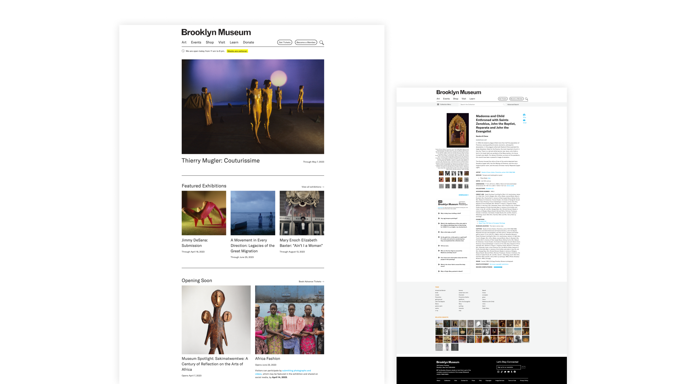
Current Brooklyn Museum websiteOur Process
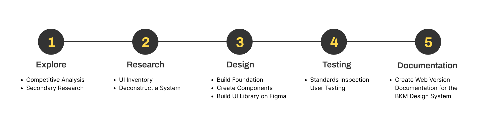
Problems
To identify the patterns and inconsistencies in the user interface design of the current
Brooklyn Museum website, we use
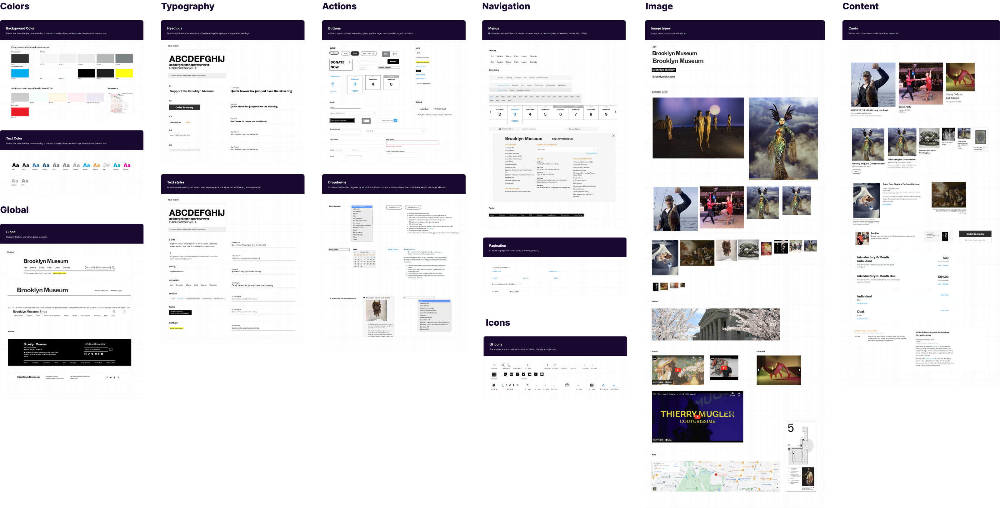
UI Inventory of Brooklyn Museum websiteWhat we found:
The color contrast does not currently meet accessibility standards-
Duplication of common components. -
Inconsistencies accross the element styles and behaviors. -
Various format of images.
No design system = interrupted user experience
Challenges
The Brooklyn Museum website faces challenges of users finding it difficult to locate elements and having an inconsistent user experience-- this leaves users feeling uncomfortable with the site's usability rather than having a completely positive experience. Therefore, we propose the three design principles to ensure interactive experiences that foster a sense of community, equal access for all users, and a clear and consistent aesthetic that provides a seamless user experience.
Design Principles
Engagement
Provide interactive experiences that motivate learning and encourage visitors to connect with different arts and relative objects, fostering a sense of community among its visitors.
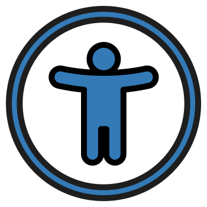
Accessibility
Provide equal access for all users, including those with disabilities. Make it accessible to all users, regardless of their backgrounds or circumstances.
Aesthetic
Provide a clear and consistent aesthetic that reflects the personality of the museum, with a minimalist approach to design that is clean, modern, and harmonious, providing a seamless user experience.
Foundations
After identifying our design principles, we translated them into visual elements. Our Style is the foundation that we set when designing our components. Our foundations supported the Color, Typography & Link style, Icons, Logo, Layout, and Border effects.
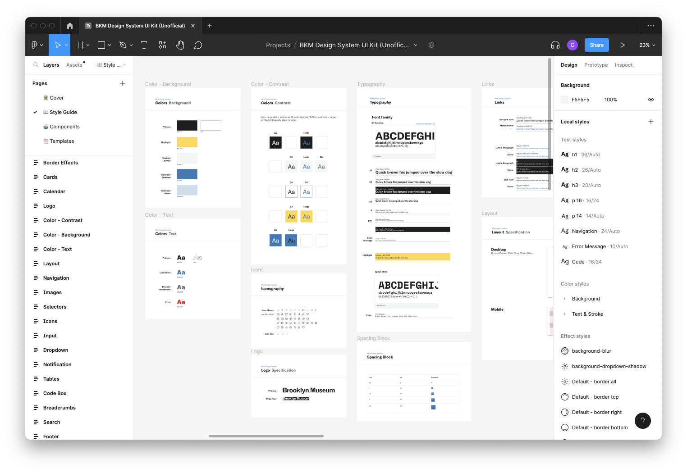
Design style library of BKM UI Kit released on Figma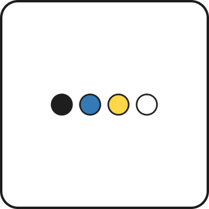
Color
We wanted to make sure that we’re staying in line with Brooklyn Museum’s brand identity. We’re making a design system not jut for streamlining the design process, but to also strengthen the overall brand identity and enhance the user experience. So we wanted to keep their original color scheme of black and white, with hints of blue and yellow, but adjusted the shading to make sure that they meet accessibility guidelines.
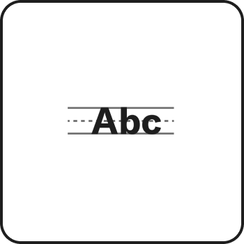
Typography
We also kept Brooklyn Museum’s original font, GT America, but introduced a type scale so that the headings and body text are consistent throughout the site.
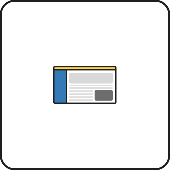
Layout
12-Column Grid
To create a sense of consistency and structure, we used 12 column grid throughout the site. By aligning components, imagery, and text with the column grid, we are able to achieve logical and consistent layouts across all screen sizes and orientations.
Spcing
Our spacing system is based on multiples of 8, meaning the width and height of elements, as well as the spacing between them, are all some multiple of 8. This not only ensures consistent and proportionate designs, but also reduces decision anxiety.
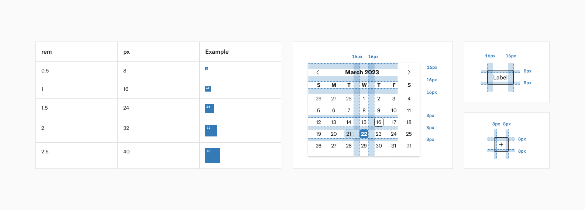
To learn more about the foundations of the BKM Design System, please refer the BKM Design System Documentation.
Component Library
Components are the building blocks for designing your product. Like legos, they can be used on their own or can be combined in various combinations to build reusable interaction patterns. Throughout the design system, we provide different component types such as Buttons, Cards, Code Box, Images, Inputs, Maps, Navigation, Selectors, and Tables.
Button
We kept one of the Brooklyn Museum’s original button style - the outline style, and designed the rest of the buttons based off of that. We standardized the design of all buttons to have the same height, and the same size of the icon and made sure that the button’s color contrast have pass the WCAG standard.
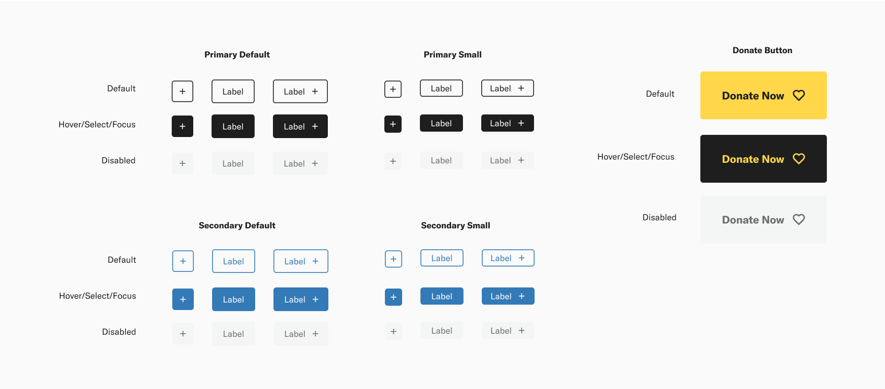
Navigation
The original navigation bar has two extra layers when clicking the options which make the page layout easy to be changed. So we restructured it, and made a floating dropdown mega menu to avoid the issue.
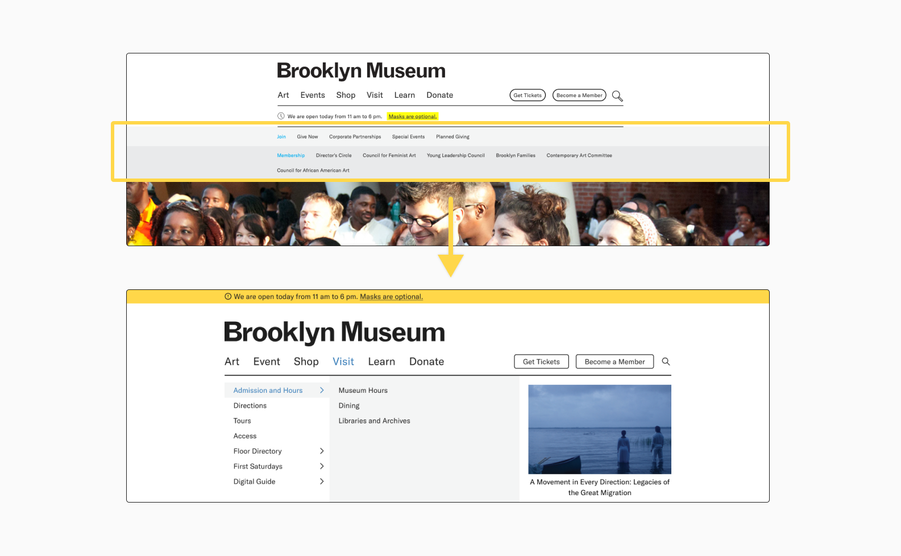
Image
While we were creating our UI inventory of the original site, we found that there were over 20 different image styles. Most of them are related to exhibition photos, but it’s unnecessary having this many variations.
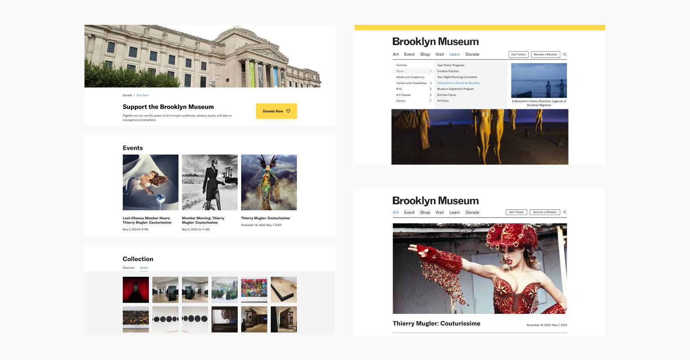
Card
The original site uses different sizes of cards for the same type of information, like in this exhibition and the event card on the homepage. In addition, the color used on the card design is also not easy to distinguish, for example, the list of prices. Therefore, we restructured them into 4 types of cards that are able to fit all the different types of information they have.
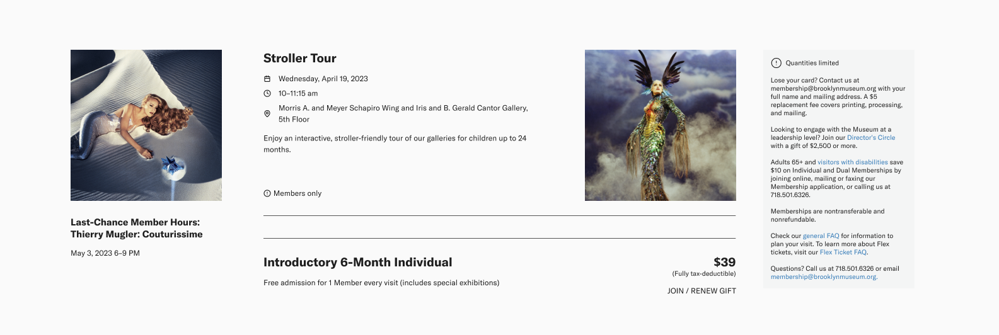
To learn more about the components of the BKM Design System, please refer the BKM Design System Documentation.
Accessibility
Our design system is all about making sure everyone can use our products with ease.
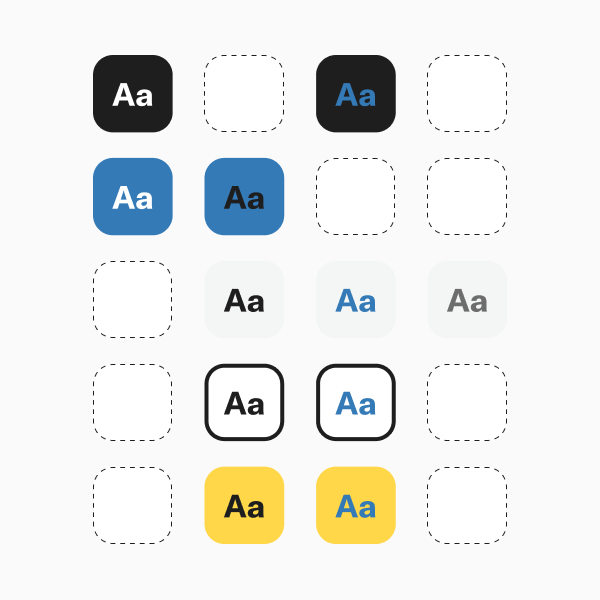
Prioritizing color contrast
We prioritize color contrast for easy readability and meets international accessibility standards and regulations with WCAG 2.1 compliance.
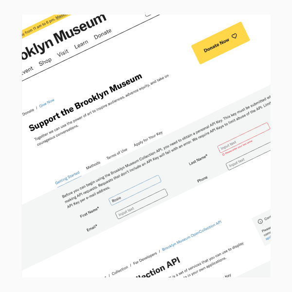
Harmonious color palettes
Our color palettes maintain sufficient contrast and adhere to accessibility standards.
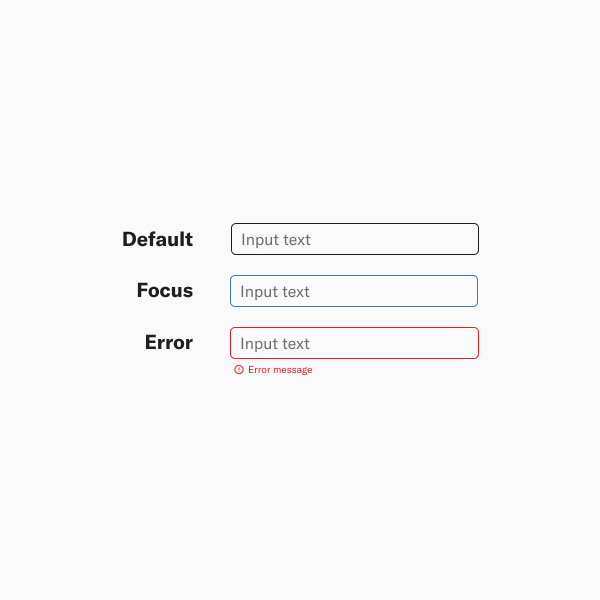
Clear input feedback
Our consistent input feedback enhances usability for all users.
BKM Design System
After the long journey of our design process, it's time to see some examples of our redesigned website based on the BKM Design System style guide and the usage of components.
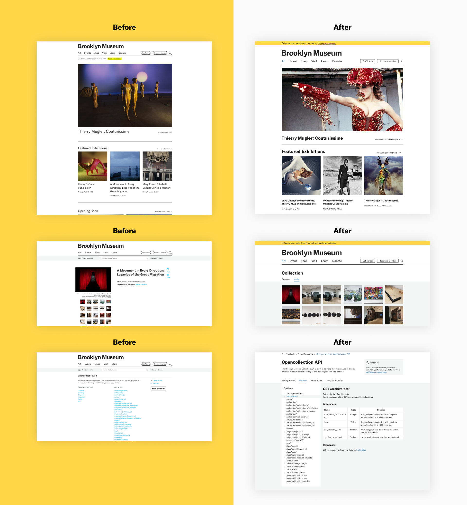
Governance and Documentation
Building the documentation for our design system serves as a guidebook that promotes consistency in design elements across our team. It provides a foundation for faster onboarding, enabling new team members to contribute effectively right from the start. Our extensive documentation guarantees the scalability and adaptability of our design system, while prioritizing accessibility to ensure that all users' needs are met.
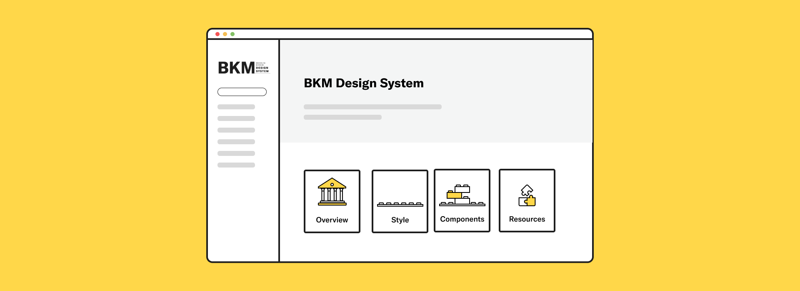
“Investing in governance ensures a sustainable design system”
So, we've established a governance framework in our documentation to ensure the long-term success of our design system. With our governance model, we've implemented a feedback mechanism that enables our users to report any design, code, or documentation issues easily.
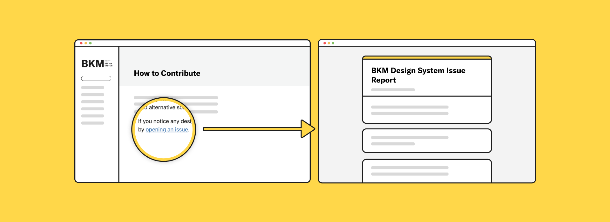
Takeaways & Next Steps
Through this project, I walk through the process between deconstructing and reconstructing a design system and learning the research methods of observing the elements of the User Interface of a website and how to narrow down those findings and transfer them into the design principles. During the process, my team and I always keep accessibility, consistency, and aesthetics in our mind to redesign and proposed BKM Design System for Brooklyn Museum. Also, during this project, I have learned about:
- Flexibility, collaboration, and accessibility are key to a successful design system.
- Consistency is vital, but innovation and experimentation should still be encouraged.
- Documenting, organizing, and regularly updating the design system are essential for its longevity.
To further enhance our design system, conduct user testing to validate our Design System's effectiveness and ensure it meets the needs of our target audience. And incorporate the valuable perspective of developers to ensure the success of the design system. Furthermore, keeping documentation up to date and accessible for all team members, including design principles, use cases, and best practices are also key for a successful Design System.
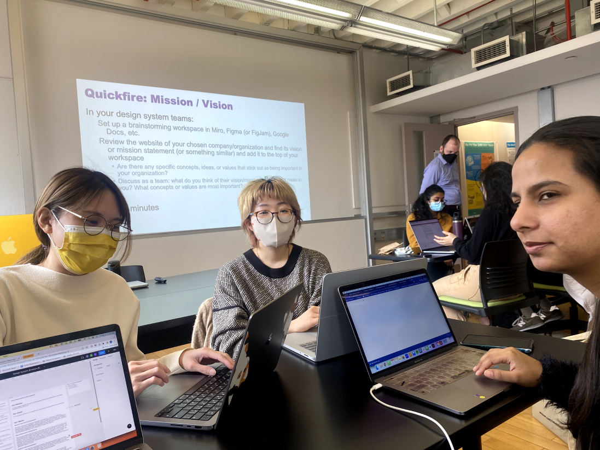
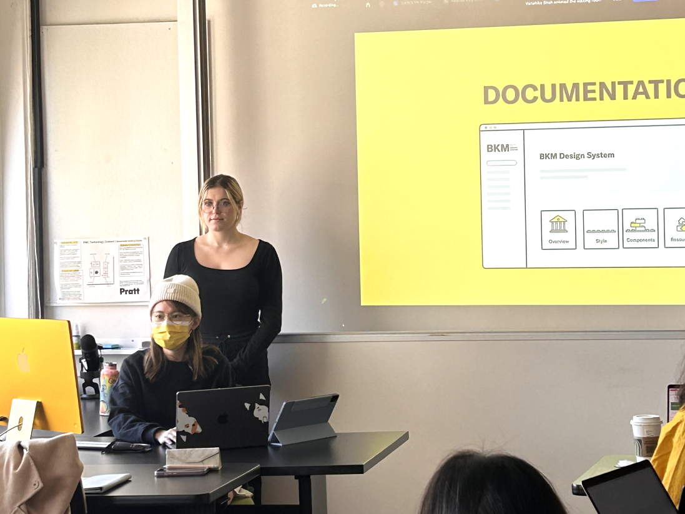